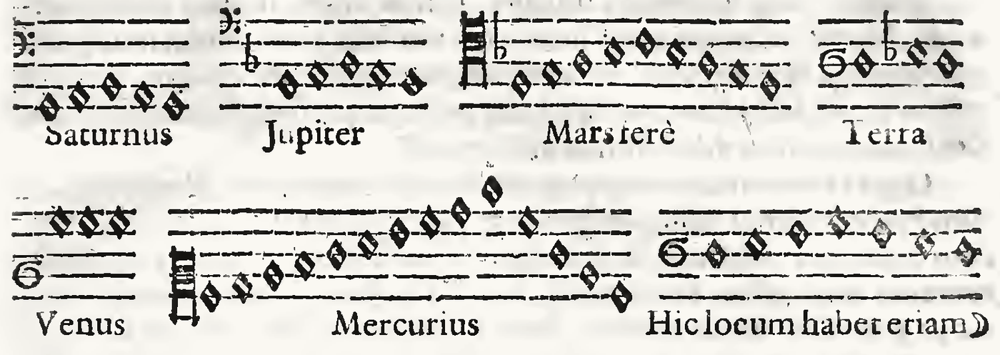

Caput VI — In Extremitatibus Motuum Planetariorum Expressos Esse Modos Seu Tonos Musicos¶
CAP. VI. In Extremitatibus motuum Planetariorum expressos esse quodammodo Modos seu Tonos Musicos.
Sequitur hoc ex antedictis, nec opus est multis verbis, singuli enim planetae singula quodammodo signant loca systematis, motu perihelio, quatenus datum est singulis, percurrere certum aliquod intervallum in Scala Musica, certis ejus Clavibus, seu locis Systematis comprehensum; cujusque ab illa Clave seu loco inceptum, qui capite praecedenti contigit illius motui aphelio, Saturno quidem & Terrae G, at Jovi h, quae in G altius transponi potest, Marti fe, Veneri e; Mercurio A, in altiori Systemate.
Vide singulos in Notis usitatis. Non formant quidem intermedios locos, quos hic vides notis impletos, articulate, sicut extremos: quia ab uno extremo, non saltibus & intervallis, sed continua tensione nituntur ad oppositum,
f. 0299 · p. 207media omnia (infinita in potentia) permeantes actu: id quod aliter a me non potuit exprimi, quam per continuam seriem Notarum intermediarum.


Venus fere manet in unisono non aequans tensionis amplitudine vel minimum ex concinnis intervallis.
Atqui signatura duarum in communi Systemate Clavium, & formatio sceleti Octavae, per comprehensionem certi intervalli concinni, est rudimentum quoddam distinctionis Tonorum seu Modorum: sunt ergo Modi Musici inter Planetas dispertiti. Scio equidem, ad formationem & definitionem distinctorum Modorum requiri plura, quae cantus humani, quippe intervallati, sunt propria: itaque voce quodammodo sum usus.
Liberum autem erit Harmonistae, sententiam depromere suam: quem quisque planeta Modum exprimat propius, extremis hic ipsi assignatis. Ego Saturno darem ex usitatis Septimum vel Octavum, quia si radicalem ejus clavem ponas G, perihelius motus ascendit ad h: Jovi Primum vel Secundum; quia aphelio ejus motu ad G accommodato, perihelius ad b pervenit; Marti Quintum vel Sextum; non eo tantum, quia fere Diapente assequitur, quod intervallum commune est omnibus modis: sed ideo potissimum, quia redactus cum caeteris ad commune systema, perihelio motu c assequitur, aphelio ad f alludit: quae radix est Toni seu Modi Quinti vel Sexti: Telluri darem Tertium vel Quartum: quia intra semitonium ejus motus vertuntur; & vero primum illorum Tonorum intervallum est semitonium; Mercurio vero ob amplitudinem intervalli, promiscue omnes Modi vel Toni convenient: Veneri ob angustiam intervalli, plane nullus; at ob commune Systema, etiam Tertius & Quartus; quia ipsa respectu caeterorum obtinet e.
Notatio Marginalis (fol. 0299, p. 207)
Tellus canit MI FA MI, ut vel ex syllaba conjicias, in hoc nostro domicilio MIseriam & FAmem obtinere.